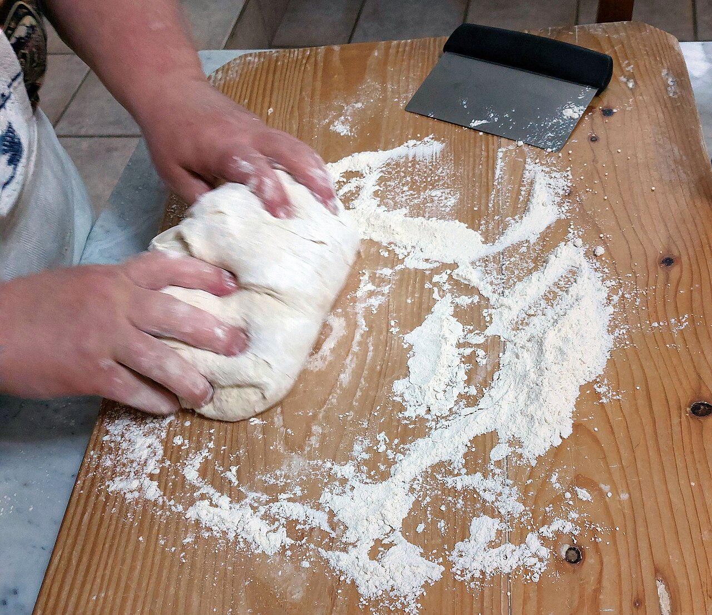

手工麻糬
糯米糰當天揉，現包現沾粉。
- 口味
- 花生粉、芝麻粉
- 份量
- 一盒六顆
NT$120示意價格
概念作品，店家為虛構。頁面上的價格、電話、地址和營業時間都是示意。

手工麻糬、草仔粿、紅龜粿，都是早上現蒸。用 LINE 先訂，來店直接拿。
點一張紙條，看內餡、份量和價格。
糯米糰當天揉，現包現沾粉。
NT$120示意價格
外皮揉進艾草，墊一片葉子下去蒸。
NT$35示意價格
用木頭粿模壓出龜殼紋，拜拜、滿月都用得到。
NT$35示意價格
在地小店，開在示意區的市場口（地點為示意），做給附近街坊吃。每天清早揉粿、包餡、上蒸籠，一天只蒸幾籠，賣完就收。
想要的口味和數量，前一天用 LINE 傳來，我們先幫你留好。當天來買也可以，只是不一定還有。

有。三種粿裝成一盒，年節前開放預訂。
取貨日在訂購時跟我們說，當天早上蒸好裝盒。
NT$380示意價格，一盒（單買合計 NT$400）
用 LINE 預訂禮盒三種方式都可以，取貨時再付錢。
營業時間打 02-0000-0000（示意），說口味、數量和幾點來拿。
現場有什麼就賣什麼。想要的口味，建議先訂。
| 星期 | 時間 |
|---|---|
| 週一 | 公休 |
| 週二到週五 | 07:00～13:00 |
| 週六、週日 | 06:30～13:00 |